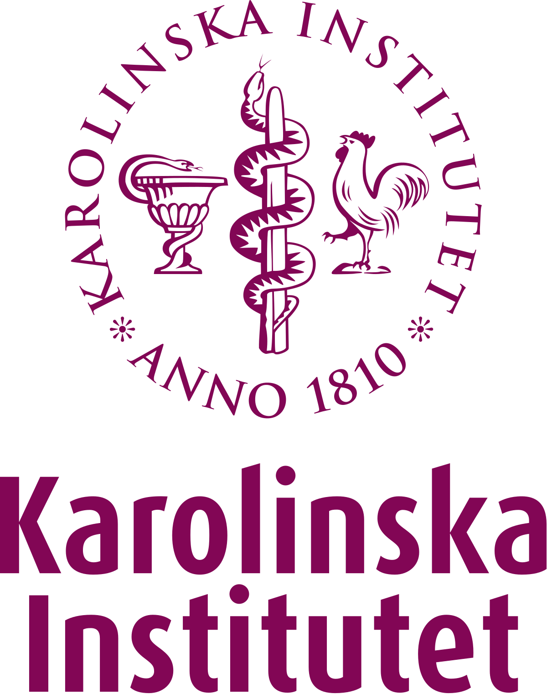

Dentist Medicine
Dentist Medicine definition
Dentistry is a branch of medicine, which specializes in treating and diagnosing diseases of the mouth, jaws, teeth, and the surrounding tissues. Dentistry is not only aimed at treating these diseases, but also preventing them. It is concerned with studying everything related to oral and dental health
Number of years studying dentistry
The study stage for most medical specialties takes from five to seven years, while other non-medical specialties do not need much More than four years to obtain a bachelor's degree. Accordingly, obtaining a bachelor’s degree in dentistry requires a period of time of five years, where students study in their first two years scientific subjects, general science subjects, medical sciences, and oral sciences, then practical training begins, which takes three years, and the first year is The training is a pre-clinical training at the university, then the fourth and fifth years are considered practical and educational training in the field of dentistry
Advantages of specializing in dentistry
1. Enjoying a high and prestigious position in society. 2. Self-employment. 3. The annual income reached a very high level with the passage of the time. Ba. Helping people. 5. Working in a stable job
Disadvantages of specializing in dentistry
1. Fatigue and exhaustion. 2. The working hours are long at first. 3. The study period is long. 4. The high costs of studying the specialty. 5. Failure in a subject may delay graduation for a period long
The best universities to study Mechanical engineering
-
 Harvard university
Harvard university -
 Tokyo Medical & Dental University
Tokyo Medical & Dental University -  karolinska institutet
-
 academic center for dentistry amsterdam
academic center for dentistry amsterdam -
 university of jorden
university of jorden
The most famous dentists in the world

Dr. Mohamad Nage ,دكتور محمد ناجي
Dentist
-----------------------

Alfred Gysi,ألفريد جيسي
Dentist
-----------------------
Alejandro Williams , أليخاندرو ويليامز
Former Senator of the Dominican Republic
-----------------------
in the end
The dentist works to treat it and preserve the life and safety of the person. The matter in the field of dentistry is not limited to the teeth; Rather, it goes beyond that, as it is concerned with the muscles of the face, neck, salivary glands, tongue, and even the teeth, a relationship related to the psychological state of the patient. This is why studying dentistry is so important,I hope you choose your future with pleasure ♡
« Previous